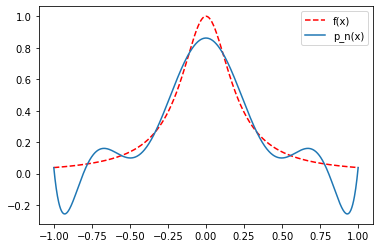
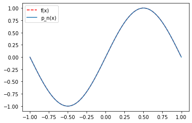
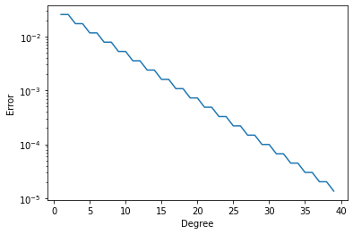

Introduction to interpolation#
We consider the following task. Given \(n+1\) distinct points \(x_0,x_1,\dots,x_n\), and \(n+1\) values \(y_0,y_1,\dots,y_n\). Find a polynomial \(p_n\) of maximum degree \(n\), such that \(p(x_j)=y_j\).
In this section we will answer the following questions:
Does a polynomial \(p_n\) with \(p_n(x_j)=y_j\) always exist, and if yes, is it unique?
How can we construct such a polynomial in practice?
If the values \(y_j\) are samples of a function. Do we convergence to the function if \(n\rightarrow\infty\)?
Existence and uniqueness of polynomial interpolation#
Let \(p_n(x)=a_0+a_1x+a_2x^2+\dots+a_nx^n\). We define the following matrix.
It is called a Vandermonde matrix. With this matrix the interpolation problem can be equivalently posed as
Hence, existence and uniqueness follows immediately if \(V\) is nonsingular.
Theorem#
We have \(\det(V)=\prod_{0\leq i<j\leq n}(x_j-x_i)\). Hence, if \(x_i\neq x_j\) for all \(i\neq j\) the Vandermonde matrix is nonsingular and there exists a unique interpolation polynomial \(p_n\) with \(p_n(x_j)=y_j\).
The proof is based on elementary expansions of the determinant. However, here we will proceed differently to proof existence and uniqueness, using the Lagrange interpolation polynomial. This will at the same time also provide a constructive method to obtain 𝑝𝑛 . The reason why Vandermonde matrices are rarely used in practice is given below. Their condition numbers grow exponentially for a simple problem with equally spaced points on the real line.
#Numerical properties of Vandermonde matrices.
import numpy as np
nvec = range(10,100,10)
for n in nvec:
x = np.linspace(-1,1,n)
A = np.vander(x)
print("Condition number for n=%i: %e" % (n,np.linalg.cond(A)))
Condition number for n=10: 4.626450e+03
Condition number for n=20: 2.722408e+08
Condition number for n=30: 1.838825e+13
Condition number for n=40: 1.907921e+17
Condition number for n=50: 1.372760e+19
Condition number for n=60: 1.329293e+19
Condition number for n=70: 3.437477e+19
Condition number for n=80: 7.048424e+19
Condition number for n=90: 1.213379e+20
Lagrange Interpolation#
We consider the simpler problem that \(y_k=1\) for a given \(k\), and \(y_j=0\) for \(k\neq \ell\). We can explicitly construct a solution as
It follows immediately that \(\text{deg}(L_k)=n\), \(L_k(x_k)=1\), \(L_k(x_j)=0\) for \(j\neq k\). The functions \(L_k\) are called Lagrange interpolation polynomials.
The solution to the original interpolation problem is now simply constructed as
The above form of the interpolation polynomial is called Lagrange interpolation polynomial. We still need to prove uniqueness.
Theorem There exists exactly one interpolation polynomial.
Proof Let \(q_n(x)\) be an other polynomial of maximum degree \(n\) that satisfies \(q_n(x_j)=y_j\). Let \(w_n:=p_n-q_n\). We then have \(w(x_j)=0\), \(j=0,\dots,n\). Hence, the polynomial \(w_n\) is a polynomial of maximum degree \(n\) with \(n+1\) distinct zeros. But since a nontrivial polynomial can only have at most \(n\) zeros it follows that \(w\equiv 0\), showing that \(p_n\) is the unique interpolation polynomial.
Barycentric Interpolation#
In practice often a different form of Lagrange interpolation is used, called Barycentric Interpolation.
Let \(\ell(x)=\prod_{j=0}^n(x-x_j)\), and define \(w_k=\left[\prod_{j=0,j\neq k}^n(x_k-x_j)\right]^{-1}\). It follows that
and therefore
This is called the first Barycentric form. It allows the evaluation of \(p_n(x)\) in \(\mathcal{O}(n)\) operations if the \(w_k\) are pre-computed. However, we can be even simpler. Interpolating the constant function \(1\) gives
Hence, we have
This is called the second Barycentric form. It avoids the evaluation of \(\ell(x)\) altogether.
The Runge phenomenon#
Consider the following approximation problem. Given a continuous function \(f\) in \([a,b]\). Find polynomials \(p_n\) of maximum degree \(n\), such that
Weierstrass approximation theorem#
Let \(f\) be a continuous function in \([a,b]\). For every \(\epsilon>0\) there exists a polynomial \(p(x)\), such that
Can we use interpolation in equidistant points to find these polynomials?
Let \(x_j=a+\frac{j}{n}(b-a)\), \(j=0,\dots,n\). Given a continuous function \(f\). What is the behavior of
as \(n\rightarrow\infty\), where \(p_n\) is the Lagrange interpolation polynomial at the points \(x_j\) with data \(y_j=f(x_j)\)?
It turns out that \(e_n\rightarrow 0\) needs not be the case even though we could naively assume that using more points and higher degree polynomials should lead to convergence. However, we may receive large oscillations at the edges of the interval. This is called Runge’s phenomenon.
%matplotlib inline
#Runge's phenomenon in Python
from scipy.interpolate import barycentric_interpolate
import numpy as np
from matplotlib import pyplot as plt
n=10 # Number of interpolation points
m=1000 # Number of points at which to evaluate the interpolation pol.
x=np.linspace(-1,1,n)
y=1/(1+25*x**2)
xeval=np.linspace(-1,1,m)
yeval=barycentric_interpolate(x,y,xeval)
yexact=1/(1+25*xeval**2)
plt.plot(xeval,yexact,'r--',label='f(x)')
plt.plot(xeval,yeval,label='p_n(x)')
plt.legend()
<matplotlib.legend.Legend at 0x7f55049077f0>

Note that this phenomenon does not need to hold for all functions. In particular, periodic functions can be very well approximated by interpolation in equispaced points as the following example for the \(\sin\) function shows.
%matplotlib inline
#Interpolation of a periodic function.
from scipy.interpolate import barycentric_interpolate
import numpy as np
from matplotlib import pyplot as plt
n=10# Number of interpolation points
m=1000 # Number of points at which to evaluate the interpolation pol.
x=np.linspace(-1,1,n)
y=np.sin(np.pi*x)
xeval=np.linspace(-1,1,m)
yeval=barycentric_interpolate(x,y,xeval)
yexact=np.sin(np.pi*xeval)
plt.plot(xeval,yexact,'r--',label='f(x)')
plt.plot(xeval,yeval,label='p_n(x)')
plt.legend()
<matplotlib.legend.Legend at 0x7f55047976d0>

Approximation of functions by polynomials#
Let \(f\) be a given function on the interval \([-1,1]\). Let \(\Pi_n\) be the space of all polynomials of degree at most \(n\). The task is to represent \(f\) by a polynomial in \(\Pi_n\). One way is interpolation, which we have just discussed. Another possibility is Approximation. When we approximate \(f\) by a polynomial in \(\Pi_n\) we are looking for a polynomial \(p\in\Pi_n\) such that the error \(e_n:=\|p_n(x)-f(x)\|\) is minimized. Here, \(\|\cdot\|\) is a suitable norm to measure the error. Above we have already seen the error in the maximum norm \(e_n:=\max_{x\in[-1,1]} p_n|\). But other error norms are possible. The following code implements approximation in the energy norm
%matplotlib inline
from matplotlib import pyplot as plt
import numpy as np
nn = range(1,40)
nsample = 500
fun = lambda x: 1./(1+25*x**2)
residuals = []
for n in nn:
x = np.linspace(-1,1,nsample+1)
h = 2./nsample
A = np.vander(x,n)
sol,res,rank,s = np.linalg.lstsq(A,fun(x))
residuals.append(h * np.sqrt(res))
plt.semilogy(nn, residuals)
plt.xlabel('Degree')
plt.ylabel('Error')
/tmp/ipykernel_55856/3931031051.py:19: FutureWarning: `rcond` parameter will change to the default of machine precision times ``max(M, N)`` where M and N are the input matrix dimensions.
To use the future default and silence this warning we advise to pass `rcond=None`, to keep using the old, explicitly pass `rcond=-1`.
sol,res,rank,s = np.linalg.lstsq(A,fun(x))
Text(0, 0.5, 'Error')
